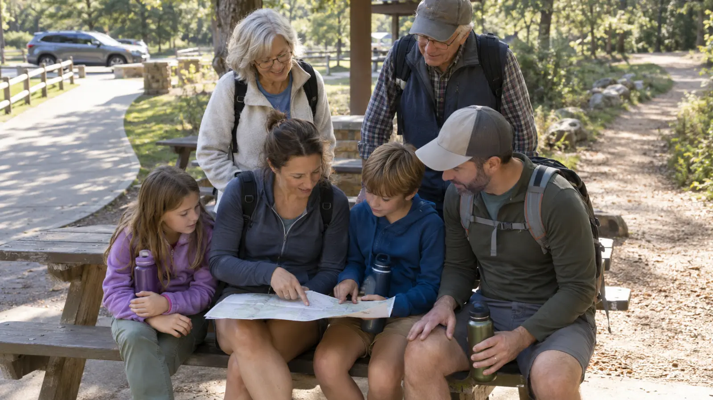

FAMILY SYSTEM · ONE DAY, MORE THAN ONE SPEED
The Multigenerational Family Day-Trip Plan: Kids, Grandparents, and One Pace
Choose one shared anchor, make rest easy, and let different energy levels change the route without splitting the family into winners and baggage.

Start with constraints, not attractions
Before choosing a destination, ask each adult privately about the limits that affect the day: maximum comfortable walking time, stairs, uneven ground, heat, standing, restroom timing, food schedule and the earliest necessary return. Ask what would make the day enjoyable too. “Accessible” is not a personality; grandparents should get a real vote in the anchor activity.
Do not ask anyone to announce medical history to the group. The planning question is functional: what surface, distance, seating and timing work? Personal medication and health decisions stay with the person and their clinician. Build the outing around stated limits without turning the family chat into an exam.
Use the one-anchor rule
Choose one shared anchor worth the drive: the waterfall view, museum exhibit, boat ride, animal loop, scenic lunch or short trail. The anchor should be achievable before anyone needs to “push through.” A second attraction is a bonus only after the whole group has eaten and rested.
A good anchor has nearby parking or a known drop-off point, a confirmed restroom, reliable seating or a family-carried option, shade or indoor relief, and an exit that does not require retracing a long route. Use official accessibility pages and call the destination when those details decide the trip.
The five-call planning check
- Parking: ask about accessible spaces, passenger drop-off, overflow distance and whether payment is card, cash or app.
- Route: confirm surface, distance, grade, stairs and whether a shorter version reaches the anchor.
- Restrooms: locate the first and last reliable options and ask whether facilities are seasonal.
- Seating: ask where benches actually are; “there are benches” can mean one at the far end.
- Exit: confirm whether a tram, elevator, shuttle or re-entry option can shorten the return.
Write the answers in the shared plan. Do not make the grandparent repeat the same access concern at every doorway.
A realistic four-hour itinerary
0:00–0:20 — Arrival without a parking-lot scramble
Use a safe passenger drop-off if it materially shortens the walk, then have one adult park while another stays with children and grandparents. Nobody wanders through moving cars to “help.” Review the family parking-lot plan before doors open.
Start with the restroom, not the gift shop. Confirm the regroup point and identify which adult carries tickets, keys and essential medication. Children get one clear job such as holding the paper map or counting the group at transitions.
0:20–1:40 — Shared anchor at the slowest sustainable pace
Move at the pace that can continue without recovery debt. A grandparent should not have to hide discomfort to avoid disappointing the kids, and a child should not be expected to stand through every adult conversation. Use short, predictable pauses before fatigue becomes a negotiation.
Keep the group together for the anchor. If the destination allows a short and long route, finish the shared portion first. Only then should a smaller group add distance while the others rest somewhere agreed upon—not wait vaguely “over there.”
1:40–2:30 — Early food and real sitting
Eat before the usual family lunch time. Crowded counters, long menus and uncertain tables are poor reset tools. Reserve when sensible or bring a compact meal that meets the family’s known needs. The family seating guide helps decide whether the destination needs a light chair, stadium seat or no carried seat at all.
Choose back-supported seating when requested. A picnic blanket is not universally easier; getting down and back up can be the hardest part of the day. Keep hydration visible but do not improvise anyone’s fluid or dietary rules.
2:30–3:20 — One optional branch
Offer three equal choices: a second short activity, quiet time with a drink or departure. Do not frame leaving as quitting. If children want more energy, one adult can use a nearby playground or short loop while another adult rests with the grandparents—provided the regroup time and place are exact.
3:20–4:00 — Bathroom, head count, clean exit
Use the last reliable restroom, confirm everyone’s belongings and leave before traffic and fatigue stack. The bathroom-stop system prevents the final stop from becoming an emergency. Build extra return time rather than promising a precise arrival.
Vehicle seating and transfers
Choose vehicles by safe seating positions, child restraints, door opening and the actual ability of passengers to enter comfortably. Do not remove a child restraint, defeat a seat belt or overload a vehicle to keep everyone in one car. A two-car plan with a clear meeting point can be safer and calmer.
Keep canes, walkers, bags and strollers secured so they cannot become projectiles and so the first-needed item is not buried. No one should twist or lift a device beyond their ability. Ask the owner how it should be folded and handled.
What to pack
- Printed or downloaded destination map with the short route marked.
- Tickets, reservation proof and parking method controlled by one adult.
- Water and simple food that respect known family needs.
- Weather layers for the least weather-tolerant person, plus dry extras in the vehicle.
- Any personal mobility or medication items managed according to the owner’s established plan.
- Compact first-aid kit, tissues, hand cleaner and trash bag.
- One small child activity for seated adult time.
- Charging cable or power bank for the navigation and contact phone; see the family phone-power guide.
Weather and meltdown backups
Heat: shorten exposure, move the anchor early and use air-conditioned or shaded recovery. Cold rain: skip the scenic persistence test and move to an indoor backup. Poor air quality: follow official health guidance and individual care plans; do not pressure anyone to stay outside. Kid meltdown: one adult takes a short reset without making the grandparents wait in a doorway. Adult fatigue: sit now, cancel the optional branch and leave.
The weather cutoff plan should be agreed before the drive. The person with the lowest safe tolerance sets the boundary; majority vote does not change heat, air quality or mobility.
Cost and booking
Spend on the bottleneck. Reserved close parking, timed admission or a table may be worth more than another attraction. Avoid nonrefundable stacks of tickets that turn rest into a financial loss. Verify cancellation, accessibility and companion policies directly with the destination.
Carry one payment backup and enough margin for a simpler meal or an early ride home. Do not use sunk cost to force another hour from a tired group.
Who should skip the combined outing
Split the day when the only available route conflicts with someone’s stated limits, when required care cannot be managed safely, when severe weather removes the recovery option or when the group cannot agree that leaving early is acceptable. A shorter meal together can be more successful than an all-day attraction built on pressure.
Useful official planning sources
- National Park Service Accessibility: planning resources and park-specific access information
- Recreation.gov: accessibility information for federal recreation planning
- National Weather Service: heat safety and current warning guidance
- AirNow: current air-quality conditions and forecasts
MAKE THE WEEKEND COUNT
Useful beats heroic.
Build the day your family can finish well, then leave enough energy for the ride home.
More family plans